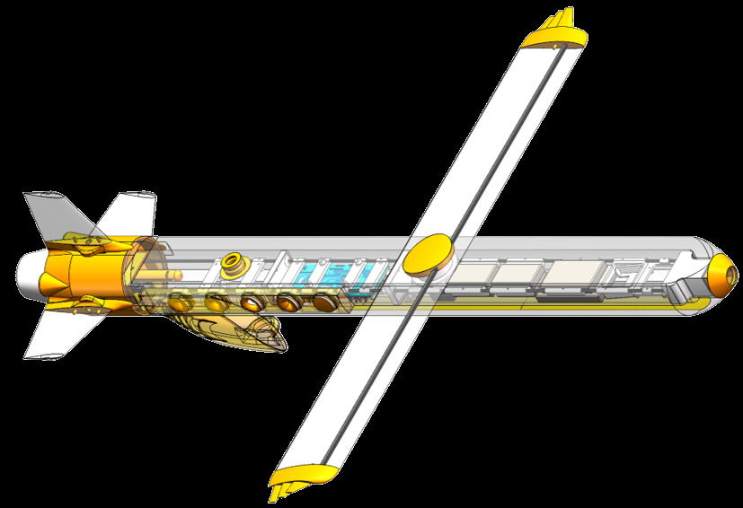
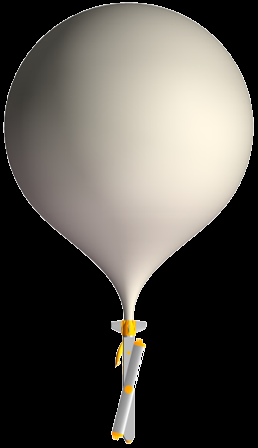
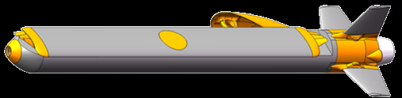
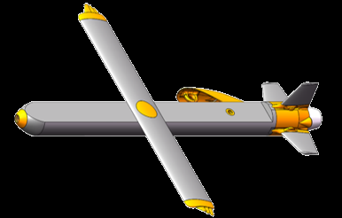

气动布局Aerodynamics
变斜翼融合弹翼布局；实时调整机翼斜角，结合带边条的全动弹翼控制姿态。设计包含冯·卡门鼻锥和融合式翼梢装置。A morphing oblique wing combined with all-moving straked fins for attitude control, a von Kármán nose and hybrid wingtip devices.

2024 年 10 月至今October 2024–present
系统设计、制造与试验记录。System design, manufacture and testing.
系统包括探空飞行器、通信链路、地面站和业务计算终端。由标准 750 g 高空气球搭载升空，设计为在约 30,000 m 高空分离，随后无动力滑翔返航。The system consists of the sounding aircraft, radio link, ground station and operational calculator. A standard 750 g balloon provides ascent; the design separates at approximately 30,000 m and returns in an unpowered glide.
研究、设计和制作由我独立完成。研究报告保留设计过程、仿真与试验资料；下载文件内容未因网页改名而修改。I carried out the research, design and construction independently. The reports retain the design process, simulations and testing records; changing the website project name has not altered the source documents.
变斜翼融合弹翼布局；实时调整机翼斜角，结合带边条的全动弹翼控制姿态。设计包含冯·卡门鼻锥和融合式翼梢装置。A morphing oblique wing combined with all-moving straked fins for attitude control, a von Kármán nose and hybrid wingtip devices.
使用 SolidWorks 建模，依次通过 XFlow、XFLR5、ANSYS Fluent / STAR-CCM+ 分析翼型和全机流场，迭代气动设计。SolidWorks models and successive airfoil and full-aircraft flow analyses in XFlow, XFLR5 and ANSYS Fluent / STAR-CCM+ inform the aerodynamic iterations.
使用嘉立创 EDA 设计多层 PCB，包括同步升降压电源、X7R 电容与薄膜电阻。Multilayer PCBs designed in JLCPCB EDA include a synchronous buck–boost supply, X7R capacitors and thin-film resistors.
通过 MBD 开发飞控算法，采用自整定 PID 与总能量管理策略，处理气球分离扰动和自主滑翔返航。Model-based development, self-tuning PID and total-energy management address balloon-separation disturbances and autonomous return glides.
自研 UHF 双向链路，使用 LoRa CSS 调制和 12 单元八木天线；地面站采用 MAVLink 协议。A custom bidirectional UHF link uses LoRa CSS modulation and a 12-element Yagi antenna. The ground station uses MAVLink.
CNC 加工 PMI 泡沫、FDM 打印 HT-PLA-GF、MJF 打印 PA11。分段内外结构和密封设计兼顾低温、重量与维护。CNC-machined PMI foam, FDM-printed HT-PLA-GF and MJF-printed PA11 parts. Segmented inner/outer structures and seals address low temperatures, mass and maintenance.
将 ISA 大气模型、达因公式和理想气体方程整合为独立网页工具，辅助探空方案估算。An independent web tool combines ISA atmospheric models, the Dines formula and the ideal gas law for sounding-plan estimates.

放大查看Enlarge ↗
放大查看Enlarge ↗
放大查看Enlarge ↗来源：本人提供的 SolidWorks 导出图。保持原比例；仅处理图外白底，不补画模型细节。现有导出分辨率较低。Source: my SolidWorks exports. Original proportions retained; only the exterior white background is removed. No model details are generated. The available exports are low-resolution.
2026 年 7 月 19–22 日 · 沱沱河与三江源19–22 July 2026 · Tuotuohe and Sanjiangyuan
在海拔约 4,534.5 m 的环境进行无人机带载低空测试和高空测试。关注低温、低压、湍流条件下的飞行器、控制和通信表现。Drone-assisted low-altitude and high-altitude tests took place in an environment at approximately 4,534.5 m, examining aircraft, control and communications under cold, low-pressure and turbulent conditions.
本人作为试飞负责人，在相关单位沟通和空域审批基础上组织试验。详细安排及可行性分析见试飞计划原文。As the test lead, I organized the trials after coordination with relevant institutions and airspace approval. The original test plan contains the arrangements and feasibility analysis.

默认播放压缩预览；原视频按需打开，不在页面加载时自动下载。Playback uses a compressed preview. The original is only loaded when requested.
PDF · 21.8 MBPDF · 21.8 MB
PDF · 21.6 MBPDF · 21.6 MB
PDF · 1.1 MBPDF · 1.1 MB